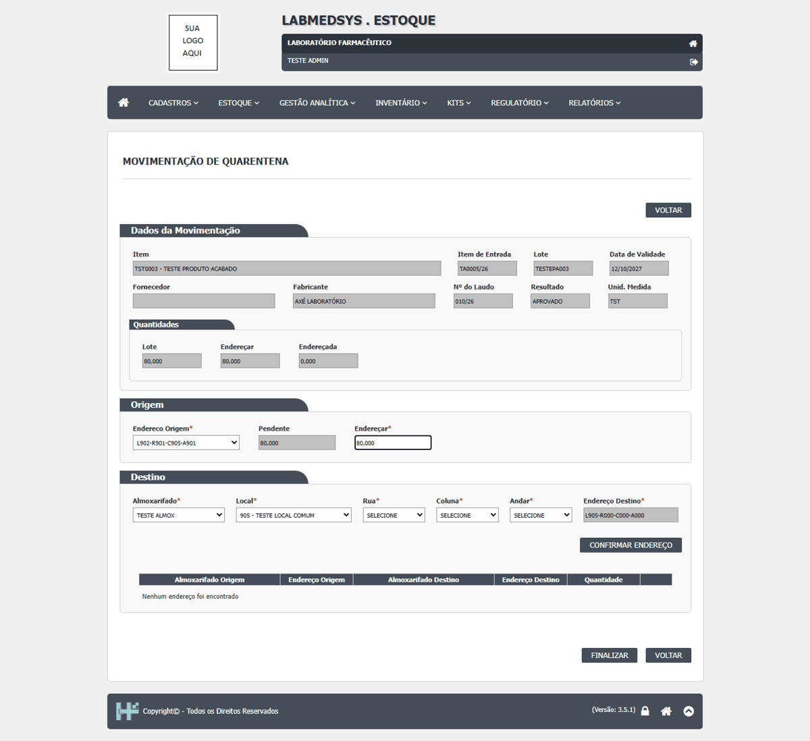

DV-EST-044 · Movimentação de Quarentena aceita destino incompleto e o saldo do lote desaparece
Ao tirar da quarentena o lote **aprovado** `TESTEPA003` (80 unidades), o destino foi confirmado só com o almoxarifado e o local (`905 - TESTE LOCAL COMUM`), **sem rua, coluna e andar** (os três em "SELECIONE"): a tela montou o endereço `L905-R000-C000-A000`, que não existe, aceitou o "Confirmar endereço" (a quantidade "Endereçada" passou a 80, embora a grade continuasse "Nenhum endereço foi encontrado") e o "Finalizar" respondeu "Movimentação finalizada!". Depois disso o lote **perdeu as 80 unidades**: o Histórico do Lote mostra a saída do endereço de origem e nenhuma entrada; "Endereços do Lote" vazio; disponibilidade zero em todas as colunas. Conferido em três consultas diferentes. Na rodada 3, a mesma tela com endereço completo (`L901-R901-C901-A901`) funcionou (CT-EST-207).
Como reproduzir o erro, passo a passo
- Lote aprovado pelo CQ, em local de quarentena, com "Atualizar resultado" feito.
- Abrir Estoque › Movimentação de Quarentena, editar o lote, escolher o endereço de origem e a quantidade.
- No destino, escolher só o almoxarifado e o local, deixando rua, coluna e andar em "SELECIONE"; clicar em Confirmar endereço e depois em Finalizar.
- Conferir Disponibilidade do Lote, Consulta de Endereço e Histórico do Lote.
Esperado
Recusa do destino incompleto ("Endereço de destino inválido!"); ou, com endereço completo, saída da origem e entrada no destino gravadas juntas.
Obtido
"Movimentação finalizada!" e o saldo do lote some: saída gravada, entrada ausente.
Evidência (captura da tela)
